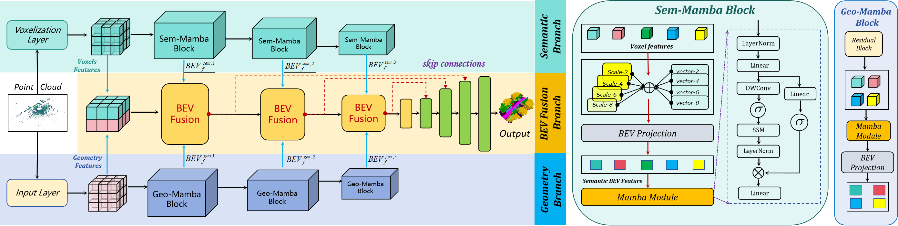

OMEGA's two major contributions
overview

OccMamba
AGR-Planner

AGR

Air-ground robots (AGRs) are widely used in surveillance and disaster response due to their exceptional mobility and versatility (i.e., flying and driving). Current AGR navigation systems perform well in static occlusion-prone environments (e.g., indoors) by using 3D semantic occupancy networks to predict occlusions for complete local mapping and then computing Euclidean Signed Distance Field (ESDF) for path planning. However, these systems face challenges in dynamic, crowded occlusion scenes due to limitations in perception networks' low prediction accuracy and path planners' computation overhead.
To address these limitations, we propose OMEGA consists of OccMamba with Efficient AGR-Planner. OccMamba adopts a novel architecture that separates semantic and occupancy prediction into independent branches, incorporating two mamba blocks within these branches. These blocks efficiently extract semantic and geometric features in 3D environments with linear complexity, ensuring that the network can capture long-distance dependencies to improve prediction accuracy. Semantic and geometric features are combined within the Bird's Eye View (BEV) space to minimise computational overhead during feature fusion. The resulting semantic occupancy map is then seamlessly integrated into the local map, providing occlusion awareness of the dynamic environment. Our AGR-Planner utilizes this local map and employs kinodynamic A* search and gradient-based trajectory optimation to generate efficient, collision-free, and energy-efficient aerial-ground hybrid paths.
Extensive experiments demonstrate that OccMamba outperforms the state-of-the-art 3D semantic occupancy network with 25.0% mIoU. End-to-end navigation experiments in dynamic scenes verify OMEGA's efficiency, achieving a 96% average planning success rate.
@article{wang2024henav,
title={HE-Nav: A High-Performance and Efficient Navigation System for Aerial-Ground Robots in Occluded Environments},
author={Wang, Junming and Sun, Zekai and Guan, Xiuxian and Shen, Tianxiang and Huang, Dong and Zhang, Zongyuan and Duan, Tianyang and Liu, Fangming and Cui, Heming},
year={2024}
}